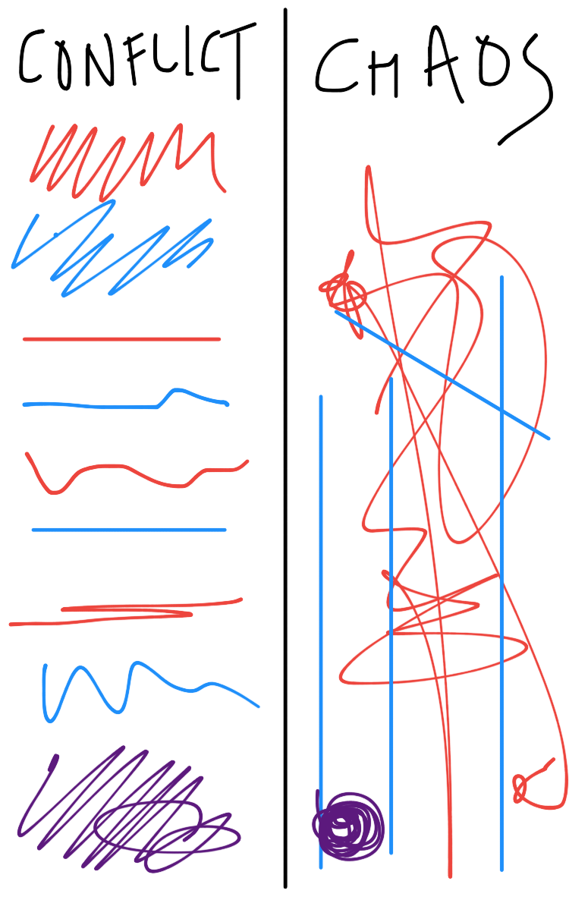

I've found that I'm constantly changing my mind about who I am as an artist.
I often have revelations about myself, then forget them...then rediscover something or remember another thing.
Here is my most current artistic statement as of 22 October 2017:
I’m drawn to trying and making a lot of different things. I act. I write computer code. I paint. I'm trying to make sculptures like Bob Rauschenberg...I compile monthly analytic data. I dance. I am always learning and trying a great deal of things. Some things I'm quite skilled at; other things I do because I enjoy the trying e.g. playing the piano — I am not skilled at playing the piano but I've been practicing playing it and improvising with it and having fun. I’m trying to manifest the future I want to see in the world. Making art is a good way for me to activate people's empathy and form a community around experiencing art. I'm learning computer programming so I can make things that can help people, whether it's bringing them new information or assisting them with something.
When I make art I am thinking about how to craft:
Comedy
Spectacle
Musicality
In the fall of 2016 I wrote the following artistic statement for a performance art class:
The one thing I know for certain is that I’m always changing my mind, forgetting who I am, changing who I am and who I want to be and what I think is good/bad.
I’m really comfortable stealing from artists right now, cause I’m figuring out who I am. Of course attributing is important, and I do that to acknowledge that collage is good way to describe myself.
Taylor Mac’s mantra “perfection is for assholes” is big for me right now.
Theatre director JoAne Akalaitis said that chaos is the source of drama, not conflict.
I take that literally as I do a lot of things. I’m a theatre person, but in general I enjoy the elements Akalaitis identifies: the illogical, the disruptive, the disturbing, and the reckless. Visually, I like messes. I like the juxtaposition of things that surprisingly go together.
I have always been intimidated by visual art. But I’m pushing myself to be uncomfortable and try things, and forget the standards I set for myself at some point.

A sketch I made on Evernote showing the difference between chaos and conflict.